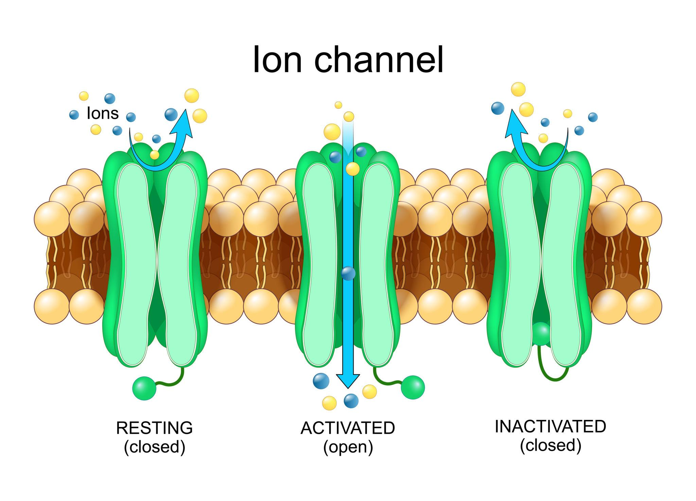
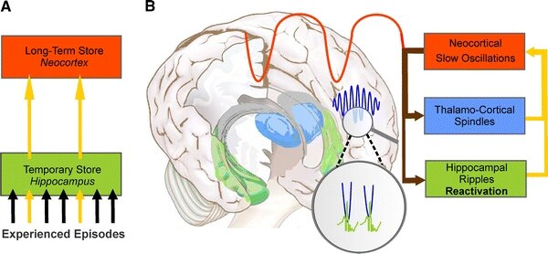
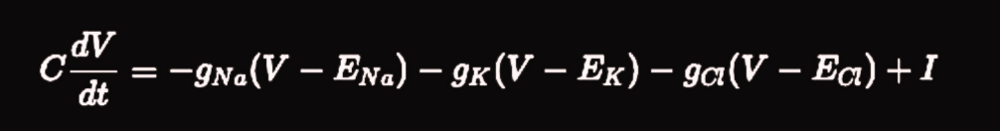

Ion channels and neural relaxation
The human brain has fascinated neuroscientists and researchers for decades. It is one of the most complex biologically grounded systems we know. An organ present in billions of individuals, something so common, yet still one of the hardest systems to truly understand.
There have been countless attempts to model what happens inside the brain and give it artificial meaning. From these efforts emerged Deep Learning, a simplified abstraction of how human brains reason and produce outputs.
The brain is not a single monolithic machine. It is composed of many regions, each responsible for different functions. In some sense, it resembles a distributed microservice architecture under a single hood. Independent modules perform their tasks, yet they constantly communicate, exchange signals, and remain aware of global state.
At the heart of this system lies the fundamental unit of computation: the neuron.
Inside every neuron, tiny protein gates open and close.

These gates regulate the flow of ions such as Sodium, Potassium, and Chloride. Sodium rushes in, Potassium flows out, Chloride enters through inhibitory channels. These ion movements generate voltage changes across the membrane.
And those voltage changes evolve according to precise physical rules.
Each ion channel pulls the membrane voltage back toward some equilibrium. Every channel acts as a relaxation mechanism. Neurons are constantly moving toward balance unless driven by external input.
In other words, neurons naturally move toward convergence. Toward a stable configuration. Toward a low-energy state.
The brain is not a machine that runs in chaotic escalation forever. It requires relaxation.
Neurons do not store information the way a database does. They relax toward stable configurations.
When you recognize a face, for example, a pattern of neurons activates. That activation spreads across connected regions. Competing neurons are suppressed. Eventually, the network settles into a stable state that represents recognition.
This settling process is not symbolic. It is dynamical.
Inhibition and consolidation
Inhibition plays a crucial role in this stability.
Not all neurons excite each other. Many release GABA, the brain's primary inhibitory neurotransmitter. GABA prevents runaway activation. Without inhibition, neural firing would escalate uncontrollably. Patterns would blur into each other. Stability would collapse.
Inhibition ensures competition.
Only the strongest pattern survives.

Biologically, this is known as lateral inhibition. Mathematically, it resembles a normalization mechanism. It prevents unbounded growth and enforces balance across the network.
As new memories are formed, stable memories also change. Experiences blend together. Concepts abstract. Details fade. This process is known as consolidation.
At the systems level, different brain regions coordinate this process.
The hippocampus replays events.
The cortex smooths representations.
Over time, episodic details weaken while semantic structure remains.
The brain performs a kind of smoothing over its own connectivity.
Diffusion on a graph
But smoothing of what?
Smoothing over connections.
And this brings us to networks.
The cortex is not a grid. It is better understood as a graph. Neurons or neural assemblies act as nodes. Synapses can be represented as weighted edges connecting them.
If activation spreads from one node to its neighbors, what determines the direction and strength of that spread?
Connectivity.
When activity spreads across a graph, mathematics describes it using an operator called the graph Laplacian. Intuitively, the Laplacian captures how much a node differs from its neighbors.
When we write diffusion on a graph in its simplest form,
it describes how activation over nodes evolves over time.
Here, M represents activation over the network. L encodes the graph structure. Gamma controls how strongly activity spreads.

What does this equation mean intuitively?
Each node relaxes toward the average of its neighbors.
That is precisely what cortical smoothing during consolidation looks like.
Local updates and global relaxation
If the brain is running a heat equation on meaning, the next question is simple.
How does it actually compute that diffusion?
It does not invert matrices.
It does not compute symbolic graph updates.
It relaxes.
When mathematicians solve a large system of equations, they often use iterative methods. Each variable updates itself using the current values of its neighbors. Over time, the system settles into consistency. No central controller is required. No unit sees the entire system.
One such method is called Jacobi iteration.
Each coordinate updates using local information. Eventually, the global solution emerges from repeated local relaxations.
That is exactly what neurons do.
Each neuron updates its state using signals arriving through its synapses. It does not see the entire cortex. It only responds to its neighbors. Yet through continuous local updates, the network converges toward coherent patterns.
Recognition is not a lookup.
It is a settling process.
Perception is not retrieval.
It is relaxation.
The heat equation on meaning is not solved by a central processor. It is solved through billions of microscopic adjustments happening in parallel.
Inhibition makes this convergence possible.
Without inhibitory circuits, activity would amplify without bound. Patterns would overlap chaotically. Stability would vanish. In mathematical systems, iterative methods without constraints can diverge. With proper normalization, they converge.
Decay, replay, and stable memory
The same necessity appears at another scale.
Memory does not change uniformly.
Some traces fade within seconds. Others reorganize slowly. Some persist for years but still drift subtly. Biologically, this reflects synaptic turnover and structural plasticity. Mathematically, it corresponds to different components decaying at different rates.
Fast unstable fluctuations disappear quickly. Slow structural modes remain.
When diffusion smooths activity across a network, sharp distinctions fade first. Broad conceptual structure survives longer. In intuitive terms, noisy episodic fragments soften into stable semantic meaning.
The brain compresses meaning by letting instability fade.
But if decay and diffusion acted alone, everything would eventually dissolve. The system would empty itself.
That does not happen because the brain reactivates what matters.
During sleep and quiet rest, neural patterns replay. Circuits revisit internal states. Stable configurations strengthen. In dynamical terms, the system moves toward lower instability. In biological terms, memories consolidate.
Replay is not random repetition. It is stabilization.
It counterbalances decay and drift. It ensures important structures remain anchored even as details fade.
From local interactions to coherent structure
Across all scales, from ion channels to cortical networks, the same pattern appears.
Local interactions drive global stability.
Energy dissipates.
Noise vanishes.
Coherent structure persists.
Mathematics describes this using diffusion equations, iterative relaxation, and convergence toward stable states.
Neuroscience observes it as neurons firing, circuits balancing, and memories consolidating.
The resemblance is not accidental.
Both domains describe large interconnected systems constrained by physics. Any such system must relax toward equilibrium. Any such system must suppress instability. Any such system must filter noise while preserving structure.
From salt moving across membranes to signals spreading across cortical networks, the same dynamical logic unfolds.
And it solves it by relaxing, competing, smoothing, and settling into stability.